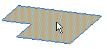
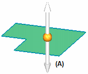
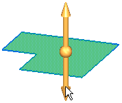
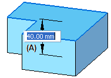
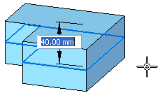
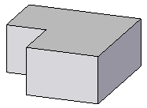
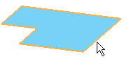

Construct an extrusion: base feature
You can construct extruded features using the Select tool or the Extrude command. Both workflows are explained in this topic.
Construct an extruded base feature using the Select tool
-
Choose Home tab→Selection group→Select
 .
. -
Position the cursor within a sketch region, and when it is highlighted, click to select it.

The extrude handle (A) is displayed.

-
Position the cursor over the Extrude handle, and click to select it.

-
Specify the feature extent. Do one of the following:
-
Move the cursor until the extruded shape is the approximate size you want, then click.
-
To define the extent precisely, type a value in the Dynamic Input Control box (A) near the cursor.

-
To extend the feature in both directions, click the Symmetric button on the command bar. The extent value is divided equally in both directions.

-
-
Complete the feature by clicking in free space.

Construct an extruded base feature using the Extrude command
-
Choose Home tab→Solids group→Extrude
 .
. -
Do one of the following:
-
On the command bar, set the Face option, position the cursor within a sketch region, and when it is highlighted, click to select it.
-
On the command bar, set the Chain option, position the cursor over a connected chain of sketch elements, and then click to select it.

-
On the command bar, set the Single option, and then select each element in a chain of connected elements.
The extrude handle (A) is displayed.
-
-
Position the cursor over the Extrude handle, and click to select it.
-
Specify the feature extent. Do one of the following:
-
Move the cursor until the extruded shape is the approximate size you want, and then click.
-
To define the extent precisely, type a value in the Dynamic Input Control box (A) near your cursor, and then press Enter.
-
To extend the feature in both directions, click the Symmetric button on the command bar. The extent value is divided equally in both directions.
-
-
Complete the feature by clicking in free space.
To define draft and crown parameters for the feature, use the Treatment Step options on the command bar. See the help topic, Applying draft angle and crowning.
How do I
Construct a protrusion or cutout (ordered)Define the extent of an extruded feature
Construct a base feature
Construct a cutout (ordered)
Construct a hole
Construct a hole (ordered)
Construct a hole on a cylinder
Construct an extrusion or cutout: subsequent features
Construct a protrusion or cutout: model face
Construct a Normal Protrusion
Construct a Normal Cutout (Part Environment)
Finish the Feature
Examples: Constructing Protrusions With the Finite Option
Examples: Constructing Protrusions With the Through All Option
Examples: Constructing Protrusions With the Through Next Option
Examples: Constructing Cutouts With the Through All Option
Examples: Constructing Cutouts With the Through Next Option
Examples: Constructing Cutouts With the Finite Option
Learn more
Part modeling workflow overviewPart modeling: Tips for getting started
Look up more details
Extrude command (synchronous)Extrude command bar (synchronous)
Extrude command (ordered)
Extrude command bar (ordered)
Cut command
Cut command bar
Demo: Create protrusion or cutout using keypoint
Normal Protrusion command
Normal Protrusion command bar
Normal Cutout command (Part environment)
Normal Cutout command bar (Part environment)